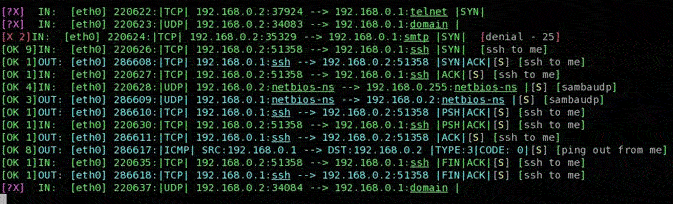

IQFIREwall console.

-
As one can see in the screenshot above, each packet is marked with a simbol representing the verdict.
It can be:
- a violet [?X], meaning the packet has not a corresponding rule inside the list;
- a green [OK N], where N is the number of the matching rule in the kernel list, meaning the packet has been accepted thanks to the N-th rule;
- a red [X M], symbolizing a packet that matched the N-th denial rule in the denial list.
Continuing to look at the picture, the direction of the packet is the following information provided, and it can be the INPUT, OUTPUT or FORWARD. Also the SNAT or DNAT or MASQUERADE indication can happen (see next figure). The next information shown on each line is about the network device on which the packet travels. In the first case one can see the first ethernet card (eth0, since a computer can have more than one internet cards, and the numbering starts from 0), in the second figure both the ethernet card and point to point (typical of a modem based dialup Internet connection, ppp0) device are involved.
Looking at the second screenshot, the host 158.110.144.168 thinks to
communicate with ppp0 address 80.104.113.84. In fact the destination nat
is taking place and the packet is forwarded to the machine with address 192.168.0.2.
The latter then
answers to the address 158.110.144.168, but this machine would receive an unexpected packet from
192.168.0.2 (and would not know what to do with it, being also a private address!)
if source nat in the post routing point did not happen.
Looking at the filtering information (yellow coloured for the forwarded packets),
one can see in blue the
state of the tcp connection. In this example, a connection setup is shown until it
becomes established, as tcp flags (SYN, SYN/ACK, ACK) show. Between square
brackets, a simple name is reported, to allow to the user user a fast recognition of the rule
which is being applied. When a rule is added, the owner can put a brief comment
(max. 20 characters) for mnemonic purposes. Both translation and filter rules
accept such name.
The length of 20 characters could represent a limit and so in the future it could
be increased to allow longer rule names.
The packet counter follows the information related to the device and then
the type of protocol is printed on the screen.
The remaining piece of information is related to the source internet address and port
and the corresponding
destination couple. TCP flags are finally reported and a short status word indicates the
estimation of the connectin state. The last information shows the name of the matching
rule, if the user provided it at the moment of its insertion.